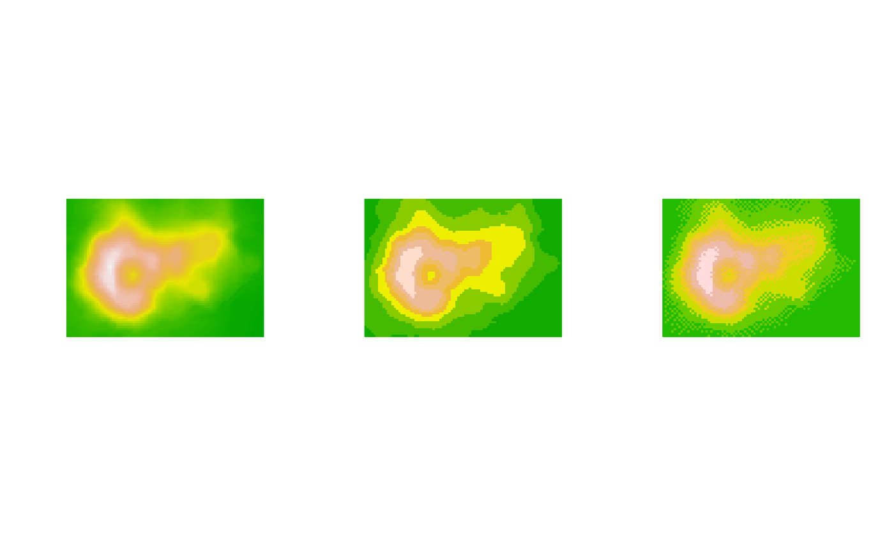

Quantisation of colours and indexing a grDevices raster image
Source:R/generic_support.r
index.colours.RdConverts an image represented by a grDevices raster object into a
matrix containing numeric indices of a quantised colour palette.
Arguments
- x
A raster object (
grDevices::as.raster()), or amatrixcontainingcharacterstrings representing colours.xcan also be alistof such matrices or rasters. All elements of this list should have identical dimensions. An overall palette will be generated for elements in the list.- length.out
A
numericvalue indicating the number of desired colours in the indexed palette.It can also be a
characterstring indicating which special Amiga display mode should be used when indexing colours. ‘HAM6’ and ‘HAM8’ are supported. SeerasterToBitmap()for more details on these special modes.- palette
A vector of no more than
length.outcolours, to be used for the bitmap image. When missing or set toNULL, a palette will be generated based on the provided colours in rasterx. In that case,stats::kmeans()is used on the hue, saturation, brightness and alpha values of the colours inxfor clustering the colours. The cluster centres will be used as palette colours.- background
On the Amiga, indexed images could not be semi-transparent. Only a single colour could be designated as being fully transparent. The “background`' argument should contain a background colour with which semi-transparent colours should be mixed, before colour quantisation. It is white by default.
- dither
Dither the output image using the algorithm specified here. See the usage section for possible options. By default no dithering ("
none") is applied. Seedither()for more details.- colour.depth
A
characterstring indicating the colour depth to be used. Can be either "12 bit" (default, standard on an Amiga with original chipset), or "24 bit".This argument is overruled when
length.outis set to “HAM6” or “HAM8”. In that case the colour depth linked to that special mode is used (12 bit for HAM6, 24 bit for HAM8).- ...
Arguments that are passed onto
stats::kmeans()(seepaletteargument).
Value
Returns a matrix with the same dimensions as x containing
numeric index values. The corresponding palette is returned as attribute,
as well as the index value for the fully transparent colour in the palette.
When x is a list a list of matrices is returned.
Details
Determines the optimal limited palette by clustering colours in an image
with stats::kmeans(). The result of the optimisation routine
will depend on the randomly chosen cluster centres by this algorithm. This
means that the result may slightly differ for each call to this function. If
you want reproducible results, you may want to reset the random seed
(set.seed()) before each call to this function.
See also
Other colour.quantisation.operations:
dither()
Other raster.operations:
AmigaBitmapFont,
as.raster.AmigaBasicShape(),
bitmapToRaster(),
dither(),
rasterToAmigaBasicShape(),
rasterToAmigaBitmapFont(),
rasterToBitmap(),
rasterToHWSprite(),
rasterToIFF()
Examples
## first: Let's make a raster out of the 'volcano' data, which we can use in the example:
volcano.raster <- as.raster(t(matrix(terrain.colors(1 + diff(range(volcano)))[volcano -
min(volcano) + 1], nrow(volcano))))
## This will create an image of the original raster using an indexed palette:
volcano.index <- index.colours(volcano.raster)
## The index values can be converted back into colours, using the palette:
volcano.index <- as.raster(apply(volcano.index, 2,
function(x) attributes(volcano.index)$palette[x]))
## Create an indexed image using dithering
volcano.dith <- index.colours(volcano.raster, dither = "floyd-steinberg")
volcano.dith <- as.raster(apply(volcano.dith, 2,
function(x) attributes(volcano.dith)$palette[x]))
## plot the images side by side for comparison
par(mfcol = c(1, 3))
plot(volcano.raster, interpolate = FALSE)
plot(volcano.index, interpolate = FALSE)
plot(volcano.dith, interpolate = FALSE)
